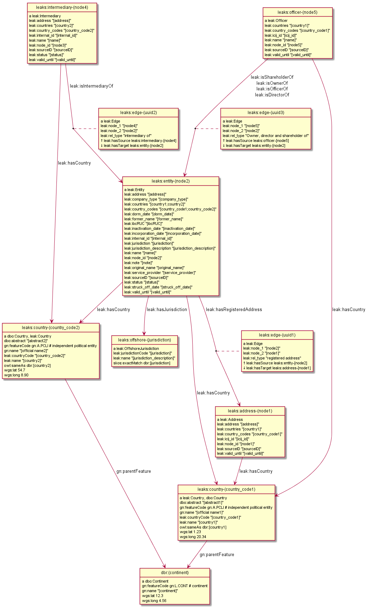

Offshore Leaks as LOD
Table of Contents
1 Intro
Day 1:
- README (HTML version): http://rawgit.com/Ontotext-AD/leaks/master/README.html
- Source repository: https://github.com/Ontotext-AD/leaks/
- SPARQL endpoint: http://data.ontotext.com/resource/leaks
- RDF download: ftp://ftp.ontotext.com/pub/leaks/rdf/
- Post an issue on Github: https://github.com/Ontotext-AD/leaks/issues
- Chat to us on Gitter: https://gitter.im/Ontotext-AD/leaks
- Ontology: https://raw.githubusercontent.com/Ontotext-AD/leaks/master/leak-ontology.ttl
- Ontology documentation: Parrot Report
- Data model: sec 2.6
1.1 Offshore Links
The Offshore Leaks database of The International Consortium of Investigative Journalists (ICIJ) is a wonderful resource that allows you to explore the murky world of high-flyer finance and offshore destinations. It includes two sources:
- Panama Papers
- Offshore Leaks (but seemingly excluding Luxembourg Leaks, see sec 2.5)
The database was released on May 10 (please download it from their torrent link) and on May 12 we decided to explore it using Linked Open Data (LOD).
1.2 The Database
The database is available as 5 CSV files with the following number of records:
>wc -l *.csv
151128 Addresses.csv
319422 Entities.csv
23643 Intermediaries.csv
345646 Officers.csv
1269797 all_edges.csv
When parsing it, you should be careful about two aspects:
- CSV quoting
- Unicode (UTF-8) encoding
The files have the following columns, which you can see with
head -1 *.csv
As we analyze the data, we'll add more in-depth notes.
1.3 Addresses.csv
| col | notes | example |
| address | textual address | #02-01; 14 MOHAMED SULTAN ROAD; SINGAPORE 238963 |
| icij_id | ICIJ guid | 91BB6C910709CE3331D31A89DD97EDAD |
| valid_until | fixed statement | The Panama Papers data is current through 2015 |
| country_codes | ISO alpha3 code | SGP |
| countries | country name | Singapore |
| node_id | unique across all files | 14000015 |
| sourceID | source name | "Panama Papers" or "Offshorshuckaks" |
1.4 Entities.csv
Legal bodies such as companies, foundations, trusts…
| col | notes | example |
| name | company name | CHEM D-T Corp. |
| original_name | official name | CHEM D-T Corp. EX-CHEM DT Corp. |
| former_name | former name (often empty) | CHEM DT Corp. |
| jurisdiction | where registered (not alpha3 code) | CAYMN |
| jurisdiction_description | where registered (country, US state, …) | Cayman |
| company_type | formal type | "Standard International Company", "BVI Trust"… |
| address | formal address | GO SHINE MANAGEMENT CO.; LTD. ROOM B; 5F.; NO. 92; SEC. 1NANJING E. RD.; JHONGSHAN DISTRICT; TAIPEI CITY 104; TAIPEI TAIWAN |
| internal_id | ??? | 1000094 |
| incorporation_date | when created | 30-MAR-2004 |
| inactivation_date | when deactivated | 06-NOV-2009 |
| struck_off_date | when removed from register | 15-FEB-2010 |
| dorm_date | when became dormant | |
| status | 29% Active, 29% Defaulted, 7% Dissolved… | Defaulted |
| service_provider | law firm serving the entity | "Mossack Fonseca", "Portcullis Trustnet" or "Commonwealth Trust Limited" |
| ibcRUC | ??? | 16469 |
| country_codes | where active (alpha3), can be multiple | AUS;BLZ |
| countries | where active (countries), can be multiple | Australia;Belize |
| note | most often empty | |
| valid_until | fixed statement | The Panama Papers data is current through 2015 |
| node_id | unique across all files | 10000018 |
| sourceID | source name | "Panama Papers" or "Offshore Leaks" |
1.5 Intermediaries.csv
Agents that help beneficiaries setup offshore companies
| col | notes | example |
| name | name | SECRETARIAL SERVICES LIMITED |
| internal_id | ??? | 1009 |
| address | address | SECRETARIAL SERVICES LIMITED P.O. BOX 37 ST. ANNE'S HOUSE; VICTORIA STREET ALDERNEY; CHANNEL ISLANDS |
| valid_until | fixed statement | The Panama Papers data is current through 2015 |
| country_codes | where active (alpha3), can be multiple | GGY;GBR |
| countries | where active (countries), can be multiple | Guernsey;United Kingdom |
| status | 46% blank, 30% ACTIVE, 20% SUSPENDED… | SUSPENDED |
| node_id | unique across all files | 11000034 |
| sourceID | source name | "Panama Papers" or "Offshore Leaks" |
1.6 Officers.csv
Agents (people, groups of people, companies) that serve as company officers and beneficiaries, both formal and real
| col | notes | example |
| name | name | Wu Chi-Ping and Wu Chou Tsan-Ting |
| icij_id | ICIJ guid | 1B92FDDD451DA8DCA9CD36B0AF797411 |
| valid_until | fixed statement | The Panama Papers data is current through 2015 |
| country_codes | where active (alpha3), can be multiple | TWN |
| countries | where active (countries), can be multiple | Taiwan, Province of China |
| node_id | unique across all files | 12000009 |
| sourceID | source name | "Panama Papers" or "Offshore Leaks" |
1.7 all_edges.csv
Relations between records. Since node_id is unique across files, there's no need to mention the entity types.
| col | notes |
| node_1 | source node |
| rel_type | relation type |
| node_2 | destination node |
1.8 rel_type
The relation types is one of the most interesting key fields. The distribution of values is as follows:
| count | rel_type |
| 319121 | intermediary of |
| 316472 | registered address |
| 277380 | shareholder of |
| 118589 | Director of |
| 105408 | Shareholder of |
| 46761 | similar name and address as |
| 36318 | Records & Registers of |
| 15151 | beneficiary of |
| 14351 | Secretary of |
| 4031 | Beneficiary of |
| 3146 | same name and registration date as |
| 1847 | Beneficial Owner of |
| 1418 | Trustee of Trust of |
| 1234 | Trust Settlor of |
| 1229 | Authorised Person / Signatory of |
| 1198 | Protector of |
| 1130 | Nominee Shareholder of |
| 960 | same address as |
| 622 | related entity |
| 583 | Assistant Secretary of |
| 409 | Alternate Director of |
| 320 | Co-Trustee of Trust of |
| 281 | Officer of |
| 272 | Resident Director of |
| 207 | Auditor of |
| 173 | Correspondent Addr. of |
| 123 | Bank Signatory of |
| 120 | General Accountant of |
| 101 | Nominated Person of |
| 89 | Legal Advisor of |
| 74 | Reserve Director of |
| 65 | Investment Advisor of |
| 64 | Nominee Director of |
| 48 | Register of Director of |
| 41 | Register of Shareholder of |
| 41 | Joint Settlor of |
| 40 | President of |
| 32 | Auth. Representative of |
| 32 | Appointor of |
| 28 | Owner, director and shareholder of |
| 25 | Beneficial owner of |
| 24 | Nominee Trust Settlor of |
| 20 | Power of Attorney of |
| 18 | Unit Trust Register of |
| 18 | Treasurer of |
| 16 | Owner of |
| 14 | Tax Advisor of |
| 14 | Custodian of |
| 13 | Successor Protector of |
| 11 | Stockbroker of |
| 9 | Power of attorney of |
| 9 | Personal Directorship of |
| 8 | Safekeeping of |
| 8 | Nominee Protector of |
| 7 | Vice President of |
| 7 | Partner of |
| 6 | Director / Shareholder of |
| 6 | Beneficiary, shareholder and director of |
| 5 | Nominee Secretary of |
| 4 | Sole shareholder of |
| 4 | Nominee Beneficial Owner of |
| 4 | Director / Beneficial Owner of |
| 4 | Chairman of |
| 3 | Principal beneficiary of |
| 3 | Member of Foundation Council of |
| 3 | Connected of |
| 2 | Sole signatory of |
| 2 | Signatory of |
| 2 | Nominee Beneficiary of |
| 2 | Director / Shareholder / Beneficial Owner of |
| 2 | Director (Rami Makhlouf) of |
| 2 | Board Representative of |
| 1 | Sole signatory / Beneficial owner of |
| 1 | Shareholder (through Julex Foundation) of |
| 1 | President and director of |
| 1 | President - Director of |
| 1 | Power of Attorney / Shareholder of |
| 1 | Nominee Name of |
| 1 | Nominee Investment Advisor of |
| 1 | Member / Shareholder of |
| 1 | Grantee of a mortgage of |
| 1 | First beneficiary of |
| 1 | Director and shareholder of |
| 1 | Authorized signatory of |
2 RDF Conversion
2.1 Date Conversion
The dates in Entities.csv have the form "06-NOV-2009", but we want to convert them to proper xsd:date, eg "2009-11-06".
We do that with a script ./dates.pl by calling it like
perl dates.pl Entities.csv > Entities-dated.csv
We can find the distribution of years like this:
perl -ne 'print "$1\n" if m{\b[0-9]{2}-[A-Z]{3}-([0-9]{4})\b}' Entities.csv|sort|uniq -c
The most active years were 1999-2009. (There are also 9 invalid dates 1-APR-1001.)
2.2 Leaks Ontology
First we define all prefixes we use in a single file ./prefixes.ttl, so we won't have to repeat them many times. In addition to standard prefixes (that you can get from http://prefix.cc/dbr,dbo,dct,rdf,rdfs,skos,owl,xsd.ttl), we also define:
@prefix leak: <http://data.ontotext.com/resource/leak/>. # ontology @prefix leaks: <http://data.ontotext.com/resource/leaks/> . # data
We made an ontology ./leak-ontology.ttl. It has these parts:
- The prefixes described above
- A header that describes the ontology itself:
leak: a owl:Ontology; rdfs:label "Offshore Leaks ontology"; rdfs:comment "Describes the ICIJ Offshore Leaks database released on 2016-05-10"; dct:subject dbr:Offshore_company, dbr:Money_laundering, dbr:Tax_evasion; dct:created "2016-05-12"^^xsd:date; rdfs:seeAlso <https://offshoreleaks.icij.org/>, <http://data.ontotext.com/resource/leaks>, <https://github.com/Ontotext-AD/leaks>; dct:source <https://offshoreleaks.icij.org/pages/database>; dct:creator <http://www.ontotext.com>; void:sparqlEndpoint <http://data.ontotext.com/sparql>.
- "Raw" classes and data properties derived directly from the CSVs, eg:
leak:Node a owl:Class; rdfs:isDefinedBy leak:; rdfs:label "Node"; rdfs:comment "Any kind of node". leak:Address a owl:Class; rdfs:subClassOf leak:Node; rdfs:isDefinedBy leak:; rdfs:label "Address"; rdfs:comment "Address of an entity, intermediary or officer". leak:address a owl:DatatypeProperty; rdfs:isDefinedBy leak:; rdfs:label "address"; rdfs:domain leak:Node; rdfs:comment "Textual address".
- Explicit linking and structuring object properties, eg
leak:hasCountry a owl:ObjectProperty; rdfs:isDefinedBy leak:; rdfs:label "hasCountry"; rdfs:domain leak:Node; rdfs:range leak:Country; rdfs:comment "Country (Countries) of Address, Entity, Intermediary or Officer"; skos:scopeNote "Obtained by splitting country_codes on ';' and linking". leak:hasJurisdiction a owl:ObjectProperty; rdfs:isDefinedBy leak:; rdfs:label "hasJurisdiction"; rdfs:domain leak:Entity; rdfs:range leak:OffshoreJurisdiction; rdfs:comment "OffshoreJurisdiction of an Entity".
- interpretation object properties, not explicitly present in the CSV files They are meant to layer further structure based on implicit semantics and inferencing (property generalization)
We make it by concatenating these parts:
cat prefixes.ttl leak.ttl leak-inferred.ttl > leak-ontology.ttl
2.3 tarql
We use tarql (SPARQL processor for Tables) to convert from CSV to Turtle.
2.3.1 tarql Queries
tarql is driven by CONSTRUCT queries.
They are fairly straight-forward: the columns are mapped to raw data properties of the same name,
while the URL is made of a descriptive prefix (eg "address-") and the node_id:
prefix rdf: <http://www.w3.org/1999/02/22-rdf-syntax-ns#> prefix leak: <http://data.ontotext.com/resource/leaks#> # ontology prefix leaks: <http://data.ontotext.com/resource/leaks/> # data construct { ?node a leak:Address; leak:address ?address; leak:icij_id ?icij_id; leak:valid_until ?valid_until; leak:country_codes ?country_codes; leak:countries ?countries; leak:node_id ?node_id; leak:sourceID ?sourceID } from <file:../Addresses.csv#encoding=utf-8> where { bind(uri(concat(str(leaks:),"address-",?node_id)) as ?node) }
We got ./addresses.rq, ./edges.rq, ./entities.rq, ./intermediaries.rq, ./officers.rq.
(These are the only files that include prefixes, since tarql can't use an extra prefix file.)
2.3.2 tarql Results
The ./addresses.rq query produces Turtle RDF data like this:
leaks:address-14000003 rdf:type leak:Address ; leak:address "\"Cantonia\" South Road St Georges Hill Weybridge, Surrey" ; leak:icij_id "240EE44DFB70AF775E6CD02AF8CB889B" ; leak:valid_until "The Panama Papers data is current through 2015" ; leak:country_codes "GBR" ; leak:countries "United Kingdom" ; leak:node_id "14000003" ; leak:sourceID "Panama Papers" .
The other files are similar. Only edges are a bit different: they use UUIDs, because
- the same pair <node_1, node_2> may be connected by several edges,
- yet edges don't have a unique ID themselves, and
tarql's special variable?ROWNUMdoesn't work:
leaks:edge-31203a84-a56e-4e2a-8bc6-0921a399b691 rdf:type leak:Edge ; leak:node_1 "11000001" ; leak:rel_type "intermediary of" ; leak:node_2 "10208879" .
Unicode is handled properly by tarql, eg:
- Côte d'Ivoire, Curaçao
- ELÍAS BAYTER MONTENEGRO, MARITZA GARCIA ALCÁNTARA
- etc
2.3.3 Running tarql
Since the queries designate the input files (assumed to be in a directory one level up), we run tarql simply like this:
tarql addresses.rq > addresses.ttl tarql edges.rq > edges.ttl tarql entities.rq > entities.ttl tarql intermediaries.rq > intermediaries.ttl tarql officers.rq > officers.ttl
This easily makes 760Mb of RDF data, so you better have a fast disk (SSD). Voila!
tarql skips some rows (unexplained), but the loss is very small.
Eg 319150 entities.ttl vs 319421 Entities.csv, or a loss of 0.08%
2.4 Country Codes
Since the data uses ISO alpha3 country codes, we have to use that to correlate to DBpedia.
- Wikipedia has such a list in the form of a table
- Geonames has another such list
- We extracted them to a Google sheet and did a quick check that all codes match (Geonames has 3 more)
The Google sheet almost does what we want, but the first column is a country display name, and not the actual page title
- Aland Islands !Åland Islands: the first is used for sorting, and the second is the page title
- Virgin Islands (British) is the display name, but British Virgin Islands is the actual page title
So we wrote a script ./countries-wiki.pl that extracts country links from Wikipedia source (./countries-wiki-source.txt). The result ./countries-wiki.txt looks like this:
ABW http://dbpedia.org/resource/Aruba AFG http://dbpedia.org/resource/Afghanistan ... XXX http://dbpedia.org/resource/Undefined
The data uses code "XXX" Undefined, so we've added a fake line for it (dbr:Undefined is a disambiguation page, but is good enough to use as a signal value).
It turns out that Addresses.csv has the largest number of country codes (211).
We cross-checked, and all codes are covered by Wikipedia (250) and Geonames (252).
We got ./countries-dbpedia.ttl (211) with statements like this:
leak:country-ABW a leak:Country; leak:code "ABW"; leak:name "Aruba"; owl:sameAs dbr:Aruba. leak:country-AGO a leak:Country; leak:code "AGO"; leak:name "Angola"; owl:sameAs dbr:Angola. ...
We also split ./countries-noleak.ttl (49) with countries that don't appear as leak:Country (but may appear as leak:OffshoreJurisdiction). It only has coreference to DBpedia that may be useful in the future, eg:
leak:country-AFG owl:sameAs dbr:Afghanistan. leak:country-ALA owl:sameAs dbr:Åland_Islands.
2.5 Offshore Jurisdictions
./jurisdictions.ttl includes data about the Offshore Jurisdictions
- The bigest destination in the Panama Leaks is BVI, but many remain XXX "Undetermined":
leaks:offshore-BVI a leak:OffshoreJurisdiction; leak:code "BVI"; leak:name "British Virgin Islands"; skos:exactMatch dbr:British_Virgin_Islands . # 151588 leaks:offshore-XXX a leak:OffshoreJurisdiction; leak:code "XXX"; leak:name "Undetermined"; skos:exactMatch dbr:Undetermined . # 55645
- Many of them re tiny islands and other exotic locations:
leaks:offshore-NIUE a leak:OffshoreJurisdiction; leak:code "NIUE"; leak:name "Niue"; skos:exactMatch dbr:Niue . # 9611 leaks:offshore-LABUA a leak:OffshoreJurisdiction; leak:code "LABUA"; leak:name "Labuan"; skos:exactMatch dbr:Labuan . # 421
- Some are not countries but parts thereof (eg a US state and a UAE emirate):
leaks:offshore-WYO a leak:OffshoreJurisdiction; leak:code "WYO"; leak:name "Wyoming"; skos:exactMatch dbr:Wyoming . # 37 leaks:offshore-RAK a leak:OffshoreJurisdiction; leak:code "RAK"; leak:name "Ras Al Khaimah"; skos:exactMatch dbr:Ras_al-Khaimah . # 2
Notably, Luxembourg is missing from the list (see Luxembourg Leaks)
2.6 Data Model
To enrich and use the RDF data efficiently, it's important to understand how it is laid out, i.e. the data model (or as is currently called, RDF Shape).
Ontotext has developed a tool rdfpuml that creates precise diagrams from actual Turtle. See "Making True RDF Diagrams With rdfpuml": presentation or continuous HTML.
We made a sample ./model.ttl that describes a few entities, Edges between them, and the associated Countries and Offshore jurisdictions. We generated the following diagram directly from it:

We'll keep enriching the diagram as we add more inferences. Stay tuned.
2.7 Day1 Recap
And looked Onto upon the land, and saw that it was good:
- CSVs parsed good, the devilish comma betwixt data divined right
- UTFs looketh right
- tarql worketh fastly and loseth nearly nought data (0.08%)
- 760 million ducats of RDF spilt forth
- Prefixes unified and registered as http://prefix.cc/leak
- Ontology described by the VOID, and shalt be registered in the LOV (see LOV announcement)
- Data model lucid and clear
- Countries and Offshores hast connexion to DBpedia
And there was evening (actually well past midnight), and there was morning–the first day.
3 Inferencing
Day 2: What shall we do today? How about inferring some new data from the basic RDF.
3.1 Linking Countries and Offshore Jurisdictions
In the original data, countries and jurisdictions are represented with codes (eg "AUS;BLZ" for 2 countries and "CAYMN" for 1 offshore destination). It's easier to query the data if these are made into explicit links, especially if one wants to explore hierarchical links (eg Entities active in Eastern Europe countries).
So we created UPDATE queries ./countries-link.ru, ./jurisdictions-link.ru
to make links hasCountry and hasJurisdiction respectively.
The first query is more complex since there can be several codes in country_codes (separated with ;):
insert { graph leaks:countries-link { ?node leak:hasCountry ?country } } where { ?node leak:country_codes ?codes. ?country a leak:Country; leak:countryCode ?code. filter(contains(?codes,?code)) }
3.2 Linking Entities
The INSERT query ./edges-link.ru makes explicit connections hasSource and hasTarget for every Edge:
insert { graph leaks:edges-link { ?edge leak:hasSource ?src; leak:hasTarget ?trg } } where { ?edge leak:node_1 ?src_id; leak:node_2 ?trg_id. ?src leak:node_id ?src_id. ?trg leak:node_id ?trg_id. }
We also made another INSERT query ./edges-specific.ru that converts
the rel_type literals listed in sec 1.8 into similarly-named relations:
insert { graph leaks:specific-relations { ?src ?rel ?trg } } where { values (?rel_type ?rel) { ("Alternate Director of" leak:isAlternateDirectorOf) ("Appointor of" leak:isAppointorOf) ("Assistant Secretary of" leak:isAssistantSecretaryOf) ... } ?edge leak:hasSource ?src; leak:hasTarget ?trg; leak:rel_type ?rel_type . }
3.3 Relation Hierarchy
The raw rel_types mentioned in the previous section are hard to understand or query:
- There are a lot of them (84)
- Some are very similar, eg "Shareholder (through Julex Foundation) of" and "Shareholder of"
- Some combine several roles in one raw relation, eg "Director / Shareholder / Beneficial Owner of"
We have therefore created a hierarchy of properties in ./leak-ontology.ttl that group similar relations into groups, allowing easier querying.
Raw relations are in camelCase and inferred ("cooked") relations are in UPPERCASE.
The hierarchy goes something like this, and is subject to change.
... indicates there are more raw relations that are skipped for brevity:
hasRegisteredAddress
isIntermediaryOf
RELATED
relatedEntity
similarNameAndAddressAs ...
SAME
sameNameAndRegistrationDateAs
RELATED_AGENT
OWNER
isBeneficialOwnerOf
isNomineeBeneficialOwnerOf
isBeneficiaryShareholderAndDirectorOf (1) ...
REAL_OWNER (3)
AGENT_OF
OFFICER
isOfficerOf
EXECUTIVE
isPresidentOf
isVicePresidentOf
isPresidentAndDirectorOf
isTrusteeOfTrustOf
isCo-TrusteeOfTrustOf ...
SERVICE_PROVIDER
isAppointorOf
isAuditorOf
isSecretaryOf
isGranteeOfAMortgageOf
AUTHORIZED_REPRESENTATIVE
isAuthRepresentativeOf
isAuthorisedPersonSignatoryOf
isBankSignatoryOf ...
DIRECTOR
isDirectorOf
isBeneficiaryShareholderAndDirectorOf (1)
isDirectorAndShareholderOf
isMemberOfFoundationCouncilOf
isNomineeDirectorOf (2) ...
NOMINEE
isNominatedPersonOf
isNomineeDirectorOf
isNomineeBeneficialOwnerOf (2) ...
Notes:
- Combined raw relations (eg isDirectorShareholderBeneficialOwnerOf) appear in several branches, thus contributing to several cooked relations (eg in this case DIRECTOR, OWNER)
- NOMINEE is a sort of flag, eg a DIRECTOR can be a real director, or NOMINEE director
- Although we distinguish REAL_OWNER as a sub-prop of OWNER, we don't yet have any instances of it. Indeed the essence of investigative work is to find out the real owner.
3.4 Geonames Place Hierarchy
We want to correlate countries to Geonames (in addition to DBpedia), in order to:
use the gn:parentFeature hierarchy to group countries
by region (eg Eastern Europe) and continent (eg Europe).
We use the Ontotext endpoint http://ff-news.ontotext.com/sparql that has
DBpedia and Geonames integrated with owl:sameAs statements between these datasets.
The following query returns the places (gn:Feature) above country (gn:A.PCLI):
PREFIX gn: <http://www.geonames.org/ontology#> PREFIX onto: <http://www.ontotext.com/> PREFIX dbo: <http://dbpedia.org/ontology/> PREFIX rdfs: <http://www.w3.org/2000/01/rdf-schema#> select * from onto:disable-sameAs { ?x a gn:Feature; rdfs:label ?name; gn:featureCode ?feat. filter not exists {?x gn:featureCode gn:A.PCLI} filter exists {?y gn:featureCode gn:A.PCLI; gn:parentFeature ?x} } group by ?x
We filter gn:A.PCLI itself, because there are some mistakes (eg dbr:Barbados is parent of itself).
The result is as follows:
dbr:Africa dbr:Arabian_Peninsula dbr:Asia dbr:Australia_and_New_Zealand dbr:Caribbean dbr:Central_Asia dbr:Earth dbr:Eastern_Africa dbr:Eastern_Asia dbr:Eastern_Europe dbr:Europe dbr:European_Free_Trade_Association dbr:La_Habana_Province dbr:Maghreb dbr:Melanesia dbr:Micronesia dbr:Middle_Africa dbr:North_America dbr:Northern_Africa dbr:Northern_Europe dbr:Oceania dbr:Polynesia dbr:South_Eastern_Asia dbr:Southern_Africa dbr:Southern_Asia dbr:Southern_Europe dbr:W_National_Park dbr:Western_Africa dbr:Western_Europe
- Mahgreb is a region of Northwest Africa that includes: Algeria, Morocco, Tunisia
- W_National_Park is a major trans-national park in West Africa that includes areas of: Niger, Benin, Burkina Faso
- La_Habana_Province is a mistake in Geonames: the small village America in that province
is made parent of South_America and North_America: we've replaced it with
dbr:Americas
3.5 Geonames Data
We use the following query ./geonames-top-level.rq to extract places at the level of country or above,
and the following attributes (geonames-top-level.ttl):
- URL in the dbr: namespace, eg dbr:Europe
- gn:name: official name
- dbo:abstract: description
- gn:featureCode: place type(s), eg A.PCLI (independent country), L.CONT (continent), L.RGN (region)
- gn:parentFeature: ancestor places
- wgs:lat, wgs:long: geographic coordinates
TODO geonames-top-level.rq
3.6 Linking to Source
We make links back to the source (https://offshoreleaks.icij.org) in order to give credit where credit is due, and to allow easy inspection of the ICIJ interactive graphs (./seeAlso.ru):
insert { graph leaks:seeAlso { ?node rdfs:seeAlso ?icij_org } } where { ?node leak:node_id ?node_id bind(iri(concat("https://offshoreleaks.icij.org/nodes/",?node_id)) as ?icij_org) }
3.7 Day2 Recap
Brushed Onto the sweat from its weary brow, and looketh at the fruit of its day's work:
- Relations between Nodes made
- Relations of entities grouped in an interpretive hierarchy
- Links back to the source (https://offshoreleaks.icij.org) added
- Hierarchy above countries obtained from Geonames
A Leaks dataset is borne. Go forth and queriest! Whence did money came from, and whither did it flow?
And there was evening, and there was morning–the second day.
4 TODO Further Ideas
This is a parking place for stuff to do in the future:
- Network analysis
- leak:Officer including the word "BEARER" (and variations) should be marked specially as "bearer shares". These are essentially anonymous shareholders or beneficiaries, often used for money laundering. Most countries have banned registration of Entities with bearer shares
- Addresses: there are literals
Entity.addressandIntermediary.address, and also linkhasRegisteredAddressto the separate classAddress, which has literalAddress.address. What nodes havehasRegisteredAddress? What is the relation between these - Look for Entities in the FIBO LEI database?
You can also suggest what we should do: hither on Github or thither on Gitter